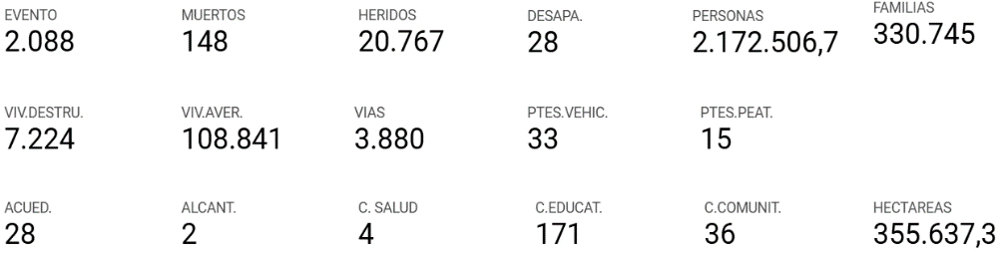
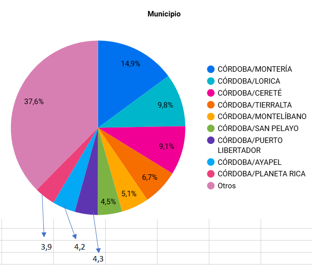
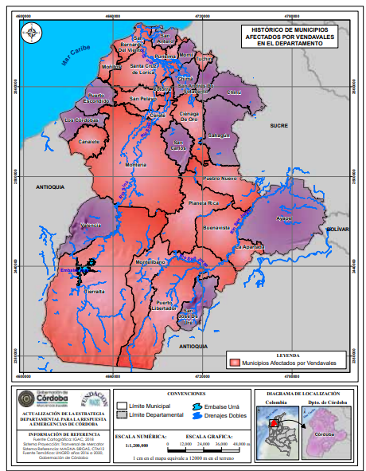
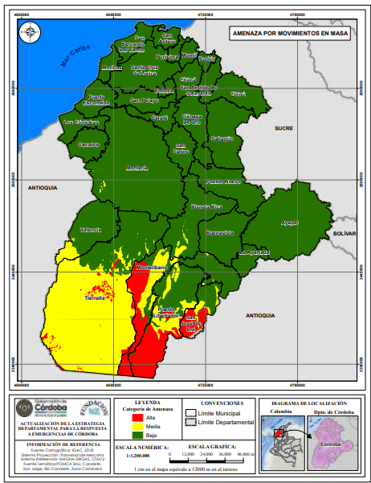
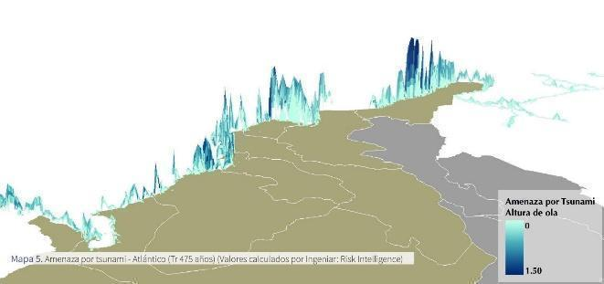
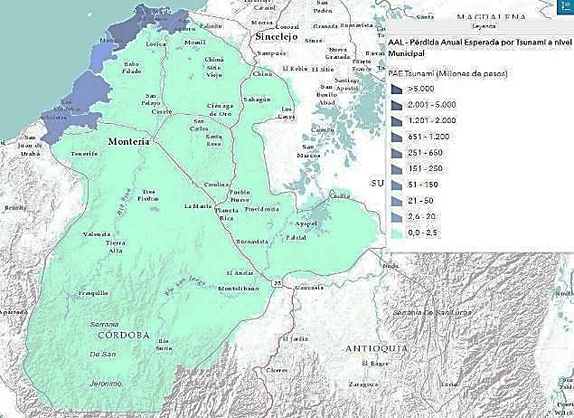
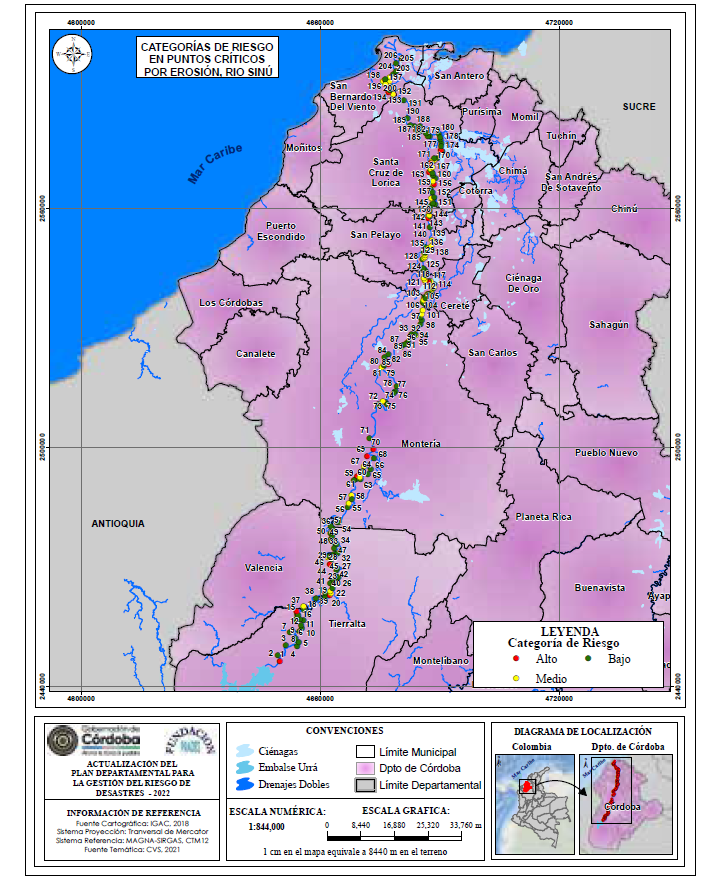
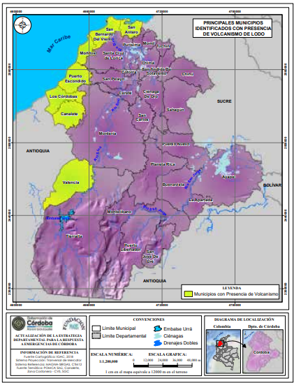
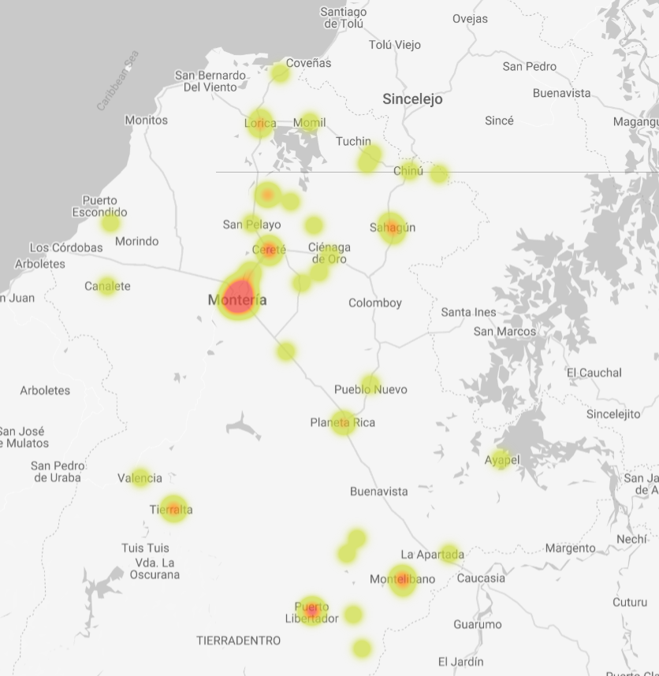
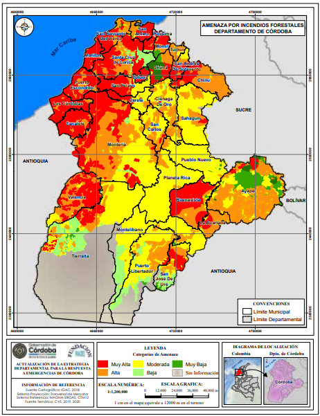

5. IDENTIFICACIÓN DE ESCENARIOS DE RIESGO
5.1. Antecedentes históricos.
Desde la adopción de la Ley 1523, Colombia ha experimentado un cambio de perspectiva en cuanto a la forma de abordar el riesgo. Esto es, pasar de un enfoque de Gestión de Desastres a una visión prospectiva de Gestión del Riesgo de Desastres (Suárez-Paba, Cruz, & Muñoz, 2020). Esto ha implicado transformaciones que involucran no sólo a las entidades del sector público sino también a aquellas del sector privado y al público en general.
5.1.1. Cifras de emergencias reportadas por el departamento durante 1938-2024.
La gráfica circular muestra que la inundación representa la amenaza más frecuente, con un 51,2%, seguida por los incendios forestales con un 20,5%. Otras amenazas relevantes son los vendavales (11,2%) y los incendios estructurales (aprox. 5%). Las amenazas como sequía, deslizamientos, avenidas torrenciales, lluvias y desabastecimiento de agua tienen una participación menor, pero significativa. Esta distribución sugiere que la gestión del riesgo debe priorizar medidas frente a inundaciones y fenómenos climáticos extremos.
Figura 19 Consolidado de eventos históricos en el Departamento de Córdoba (1938-2023). Fuente: UNGRD (2024)
Según el visor de consolidado de emergencias se reportaron 2.088 eventos durante el periodo del 1938-2024, las perdidas y daños totales de estos eventos sumaron 148 personas fallecidas, 28 personas desaparecidas, 20.767 heridos, en total 2.172.506 personas afectadas, 7.224 viviendas destruidas y 171 centros educativos afectados.

Figura 20 Reporte de afectaciones por eventos presentados en el departamento de Córdoba (1938-2024). Fuente: UNGRD (2024)
5.1.2. Análisis de los municipios con más reportes de emergencias (1938-2023).

Figura 21 Reporte de afectaciones en municipios por eventos presentados en el departamento de Córdoba (1938-2024). Fuente: UNGRD (2024)
La distribución porcentual de eventos reportados por los municipios de Córdoba es liderada por Montería (15%) y Lorica (9.8%) como los municipios con más eventos. Después, se destaca Cereté (9.1%) y Tierralta (6.7%), mientras que municipios como Montelíbano, San Pelayo y otros, tienen reportes de eventos menores al 8%.
5.2. Caracterización de los escenarios de riesgo según el PDGRD.
5.2.1. Priorización de amenazas.
Tabla 12 Eventos priorizados en el Departamento de Córdoba. Fuente: PDGRD (2023).
| Fenómeno Amenazante Identificado/Priorizados | Municipios Priorizados. | |
| 1 | Inundación | Municipios de Cerete, San Pelayo, San Carlos, cuenca media Rio Sinú, Ciénaga de Oro, Valencia, San Bernardo del Viento, San Antero, San José de Ure, Pueblo Nuevo |
| 2 | Movimientos en masa | San Carlos, Montería, Lorica, San Antero, San Andrés de Sotavento, Planeta Rica y Pueblo Nuevo |
| 3 | Vendavales | Cuenca media Rio Sinú, Lorica, Momil, Chima y Purísima. Tierralta, Tuchín |
| 4 | Incendios Forestales | Ciénaga Grande de Lorica, Bajo Sinú, San Andrés de Sotavento |
| 5 | Erosión Fluvial | Tierralta |
| 6 | Erosión Costera | Puerto Escondido, San antero, Los Córdobas |
| 7 | Diapirismo de Lodo | Canalete |
5.2.2. Amenazas origen natural.
5.2.2.1 Vendavales.
Los vendavales en el departamento de Córdoba representan una amenaza frecuente, caracterizada por vientos fuertes y destructivos que alcanzan velocidades de hasta 80 km/h en cortos periodos de tiempo, lo que genera afectaciones significativas en la infraestructura vital, industrial, redes de servicios públicos y sectores agropecuarios.
Su ocurrencia se ve favorecida por fenómenos climáticos como el calentamiento global y el aumento de lluvias y tormentas, mientras que la deforestación y la remoción indiscriminada de la cobertura vegetal incrementan la vulnerabilidad de las comunidades al eliminar las barreras naturales contra estos vientos (CVS, 2018).
En este contexto, la baja resistencia estructural de las viviendas y edificaciones en zonas con pendientes bajas agrava los impactos, evidenciando la necesidad de implementar medidas de mitigación tanto estructurales como no estructurales para reducir el riesgo en las zonas más expuestas (CVS, 2017).
Históricamente, los municipios más afectados por vendavales en Córdoba son aquellos situados en las cuencas de los ríos Sinú y San Jorge, así como en la subregión Costanera, destacándose Moñitos, Canalete y San Bernardo del Viento, junto con Pueblo Nuevo y Tuchín, que han registrado eventos de gran magnitud (CVS, 2018).

Figura 22 Mapa de municipios afectados por vendavales en el departamento de Córdoba. Fuente: Plan Departamental de Gestión del Riesgo de Desastres, Gobernación de Córdoba y CVS (2021), versión pdf, pg. 251.
Este mapa muestra los municipios del departamento de Córdoba afectados históricamente por vendavales, marcados en color rojo. La mayor parte del territorio, especialmente en el centro, sur y suroccidente, ha sido impactada por estos fenómenos climáticos. Municipios como Tierralta, Montelíbano, Puerto Libertador y Montería presentan alta recurrencia. Las zonas del norte y oriente muestran menor afectación, aunque no están exentas. Esta información es clave para fortalecer alertas tempranas y mejorar la infraestructura ante eventos de vientos fuertes.
5.2.2.2. Sequías.
La sequía en el departamento de Córdoba se ha convertido en un fenómeno recurrente con graves implicaciones ambientales, económicas y sociales. De acuerdo con la UNGRD, la sequía se define como la escasez temporal de agua en una región en comparación con las condiciones habituales, fenómeno que en Colombia está influenciado por el cambio climático y eventos macroclimáticos como El Niño. Este último ha generado impactos severos en el departamento, provocando racionamientos eléctricos, disminución de los caudales de ríos y cuerpos de agua, incendios forestales y afectaciones a la salud pública (CVS, 2017).
La variabilidad climática ha hecho que zonas específicas, como la región costera, sean particularmente vulnerables al desabastecimiento hídrico, afectando directamente a municipios como Los Córdobas, Moñitos, Puerto Escondido, San Bernardo del Viento y San Antero (CVS, 2018). Uno de los sectores más afectados por la sequía es el hídrico, ya que la reducción de precipitaciones impacta el abastecimiento de agua para acueductos municipales y rurales. Además, el déficit de lluvias provoca que los caudales ecológicos disminuyan a niveles críticos, afectando el equilibrio ambiental de los ecosistemas (CVS, 2017).
El sector eléctrico también enfrenta desafíos debido a la reducción del caudal de los embalses, lo que limita la generación hidroeléctrica y obliga a un mayor uso de energía térmica. En el sector agropecuario, la sequía impacta la producción de pastos, lo que disminuye la producción de leche y carne, afectando gravemente la economía local. Según la Federación de Ganaderos (FEDEGAN), en la sequía de 2014 – 2015 se reportó la pérdida de aproximadamente 24.500 hectáreas y la muerte de 4.700 cabezas de ganado en Córdoba (CVS, 2018).

Figura 23 Mapa de municipios declarados en calamidad pública por desabastecimiento de agua potable. Fuente: Plan Departamental de Gestión del Riesgo de Desastres, Gobernación de Córdoba y CVS (2021), versión pdf, pg. 243.
Este mapa muestra los municipios de Córdoba que han sido declarados en calamidad pública por desabastecimiento de agua potable, resaltados en color naranja. La mayoría se ubican en la zona norte y noroeste del departamento, incluyendo San Antero, San Bernardo del Viento, Lorica, Montería y Los Córdobas. Estas zonas enfrentan dificultades para acceder al agua, a pesar de estar cerca del mar o de fuentes superficiales. El sur del departamento no presenta reportes de esta emergencia. Este análisis ayuda a priorizar inversiones en infraestructura hídrica y planes de contingencia en los territorios.
Prácticas inadecuadas, como quemas agrícolas y fogatas para ampliar la frontera ganadera y agricola, aumentan la vulnerabilidad de los bosques, incrementando el riesgo de pérdida de cobertura vegetal. La sequía en Córdoba es, por tanto, un fenómeno multidimensional que requiere estrategias integrales de prevención y mitigación para reducir sus impactos en los distintos sectores afectados.
5.2.3. Amenazas de origen socio natural.
5.2.3.1. Inundaciones.
Las inundaciones en el departamento del Córdoba son eventos recurrentes influenciados por lluvias intensas y fenómenos climáticos como “El Niño” y “La Niña”, lo que genera desbordamientos de ríos y graves afectaciones a la población, infraestructura y sector agropecuario (IDEAM, 2020). Factores como la urbanización, la expansión agrícola y la construcción de infraestructura han modificado el comportamiento natural de las cuencas, aumentando la vulnerabilidad de los territorios (UNGRD, 2021).

Figura 24 Histórico de áreas afectadas por inundación en el departamento de Córdoba. Fuente: Plan Departamental de Gestión del Riesgo de Desastres, Gobernación de Córdoba y CVS (2021), versión pdf, pg. 196.
Este mapa muestra las zonas históricamente afectadas por inundaciones en el departamento de Córdoba, resaltadas en color azul oscuro. Las áreas más impactadas se encuentran en municipios como Ayapel, Lorica, San Bernardo del Viento, San Pelayo, Montelíbano y Puerto Libertador. Estas zonas coinciden con ríos y ciénagas, lo que las hace propensas a desbordamientos. La mayor concentración de eventos se da en la región norte y suroriente del departamento. Esta información es clave para prevenir futuros desastres y planificar adecuadamente el uso del suelo.
Los ríos Sinú y San Jorge representan los mayores riesgos de inundación en la región. El río Sinú, especialmente en el Complejo Cenagoso del Bajo Sinú, ha visto alterado su régimen hídrico debido a la construcción del embalse Urra, incrementando el riesgo en algunas zonas (Cardona et al., 2019).
En el caso del río San Jorge, municipios como La Apartada y Pueblo Nuevo han enfrentado eventos en los que el 80% del territorio ha quedado inundado en épocas de lluvia (UNGRD, 2022). Se han identificado más de 300 puntos críticos, con un 6,31% en riesgo alto en el Sinú y 5,3% en el San Jorge, principalmente en áreas ribereñas con condiciones socioeconómicas frágiles (IDEAM, 2021).
La pérdida de cultivos y la interrupción de actividades económicas agrícolas representan un desafío para la seguridad alimentaria y el desarrollo económico de la región (FAO, 2020). Asimismo, los eventos de inundación generan desplazamientos temporales o permanentes, aumentando la presión sobre los sistemas de atención humanitaria y los procesos de reubicación de la población afectada (UNHCR, 2022).
Respecto a información disponible en materia de inundaciones para el Departamento del Córdoba, se observa que el IDEAM realizó los siguientes a Escala 1:2.000:
Ayapel: Amenaza, Profundidad y Velocidad de Flujo
Momil: Amenaza, Mancha, Profundidad y Velocidad de Flujo
Montelíbano: Amenaza, Profundidad y Velocidad de Flujo
5.2.3.2. Avenidas torrenciales.
Cerca del 80% de la población del país reside en zonas aledañas al Sistema Montañoso de los Andes, lo cual genera condiciones de susceptibilidad muy altas debido a la topografía, a las condiciones geológicas pues el sistema montañoso está constituido por formaciones relativamente jóvenes y en evolución, además de los altos volúmenes de precipitación que se presentan anualmente.
La conjunción de las características mencionadas, permiten la formación de flujos rápidos que circulan por cauces con pendientes altas, transportando una mezcla de agua y sólidos provenientes de las laderas adyacentes o del lecho del cauce y depositándolos una vez llega a zonas de baja pendiente. Frente a este fenómeno que ha dejado un número significativo de muertes en el país, la Unidad Nacional para la Gestión del Riesgo de Desastres (UNGRD) presentó una priorización de cuencas a nivel municipal por riesgo de las avenidas torrenciales.
| Nro. Muni | cipios Priorida | d N° eventos | Drenaje | |
| 1 | Puerto Libertador | ALTA | 7 | Quebrada Lucas |
| 2 | Montelíbano | ALTA | 4 | Quebrada Muchajagua |
| 3 | Tierralta | ALTA | 3 | Arroyo La Burra |
Tabla 13 Priorización de municipios con escenarios de amenaza por avenidas torrenciales. Fuente: UNGRD (2022).
Recientemente, el Servicio Geológico Colombiano (SGC, 2021) construyó la “Guía metodológica para zonificación de amenaza por avenidas torrenciales” en el cual se proporcionan lineamientos técnicos para la evaluación de amenaza por avenidas torrenciales, los cuales permiten disminuir la subjetividad a la hora de abordar el problema, y sirven, además, como herramienta para la unificación de conceptos y elaboración de estudios uniformes.
5.2.3.3. Movimientos en masa.
Los movimientos en masa en el departamento de Córdoba corresponden a deslizamientos, desprendimientos y flujos de suelo y rocas causados por la acción de la gravedad (Cruden, 1991).
La susceptibilidad a estos fenómenos está determinada por factores internos como la composición del suelo—donde materiales como arcillas y arenas presentan alta inestabilidad—, la topografía del terreno y la presencia de agua, que debilita la cohesión del suelo. A esto se suman factores externos como la deforestación, el uso intensivo del suelo para actividades agropecuarias y mineras, así como la expansión urbana desordenada, que generan alteraciones en los patrones de drenaje y desestabilización de laderas.
Los municipios con mayor afectación se encuentran en la subregión de San Jorge, particularmente San José de Uré, Puerto Libertador y Montelíbano, donde la actividad minera y la explotación de recursos naturales han incrementado el riesgo de deslizamientos. Históricamente, en San José de Uré se han registrado deslizamientos significativos en cerros como San Antonio, Filo de las Cruces y San Pedrito, con pérdidas humanas y materiales. En el municipio de Valencia, hacia la cuenca del río Sinú, se han reportado movimientos en masa asociados a cortes de terreno sin medidas de protección y cambios en el uso del suelo (CVS, 2021).

Figura 25 Zonificación de amenaza por movimientos en masa en el departamento de Córdoba. Fuente: Plan Departamental de Gestión del Riesgo de Desastres, Gobernación de Córdoba y CVS (2021), versión pdf, pg. 259.
Según el análisis de amenaza por movimiento en masa para el departamento de Córdoba, el sur de Córdoba, es decir, las subregiones del Alto Sinú y San Jorge presentan las zonas con mayor riesgo, con amenazas alta y media debido a su relieve montañoso y la influencia hídrica del Parque Nacional Natural Paramillo. El resto del departamento presenta una amenaza baja, salvo algunos sectores de Montería, San Carlos, Canalete y Los Córdobas, donde la amenaza es moderada. La expansión de asentamientos en zonas de alta susceptibilidad y la falta de planificación territorial continúan siendo factores determinantes en la vulnerabilidad de la población ante estos eventos.
5.2.4. Amenazas de origen geológico.
5.2.4.1. Escenario de amenaza por Sismo.
Los municipios que deben tener microzonificación sísmica en el departamento de Córdoba según las estadísticas del año 2021, son:
| Municipio | Población | Amenaza Sísmica |
| Montería | 509.558 | Intermedia |
| Cerete | 109.299 | Intermedia |
| Lorica | 116.404 | Intermedia |
| Sahagún | 111.135 | Intermedia |
Tabla 14 Municipios con amenaza sísmica intermedia en el departamento. Fuente: UNGRD (2021).
De acuerdo a lo establecido en el Reglamento Colombiano de Construcción Sismo Resistente NSR-10 (sección A.2.9.2) “Las capitales de departamento y las ciudades de más de 100.000 habitantes, localizadas en las zonas de amenaza sísmica intermedia y alta, con el fin de tener en cuenta el efecto que sobre las construcciones tenga la propagación de la onda sísmica a través de los estratos de suelo subyacentes, deberán armonizar los instrumentos de planificación para el ordenamiento territorial, con un estudio o estudios de microzonificación sísmica, que cumpla con el alcance dado en la sección A.2.9.3.”.
El Sistema de Información de Sismicidad Histórica de Colombia (SISHC), liderado por el SGC presenta las referencias históricas, intensidades macrosísmicas y evaluaciones sismológicas de los sismos más importantes que han ocurrido en el territorio colombiano desde el siglo XVII. Para mayor información: Sismicidad Histórica de Colombia
Adicionalmente, el Servicio Geológico Colombiano cuenta con un visor en el cual se puede consultar la información de los últimos sismos registrados en el país. Para mayor información: SGC - Visor Sismos

Figura 26 Pérdida Anual Esperada por Sismo a nivel Municipal. Fuente: Portal Geográfico del Conocimiento del riesgo de desastres (2025).
Link: https://ungrd.maps.arcgis.com/apps/dashboards/dcd959995f3a480aa2b9bf50bc56e78d
El mapa de la Figura 22 muestra la Pérdida Anual Esperada (PAE) por sismo a nivel municipal en Córdoba, utilizando una escala de colores donde el rojo oscuro indica mayores pérdidas económicas. Municipios como Montería y el centro-norte de Córdoba presentan las afectaciones más altas, con valores que superan los 300.000 millones de pesos, lo que sugiere una mayor concentración de infraestructura y población vulnerable.
En contraste, los municipios del sur de Córdoba y algunas zonas costeras tienen menores pérdidas esperadas, oscilando entre 1.000 y 10.000 millones de pesos, posiblemente debido a su menor densidad poblacional y condiciones geológicas más favorables.
5.2.4.2. Escenario de amenaza por Tsunami.
Los municipios que presentan escenario de amenaza son: Los Córdobas, Puerto Escondido, Moñitos, San Bernardo del Viento y San Antero.
En términos generales, las costas de Colombia en el Pacífico y en el Caribe se encuentran expuestas a la ocurrencia de un tsunami, sin embargo, las características de cada costa causan que los impactos del fenómeno sean diferentes en cada una de ellas. En el Pacífico históricamente se han registrado tsunamis causados por sismos con fuente en la zona de subducción en los límites Colombia – Ecuador. En la región Caribe, por el contrario, además de la fuente sísmica, existe el potencial de ocurrencia de tsunami causado por deslizamiento submarino.
El “Atlas de Riesgo de Colombia: revelando los desastres latentes” presenta mapas de amenaza por Tsunami para el caribe colombiano, asociado a un periodo de retorno de 475 años.

Figura 27 Mapa amenaza por tsunami – Atlántico. Fuente: Atlas de riesgo de Colombia, UNGRD (2021), pg. 38.
Link: https://drive.google.com/file/d/1XS7wURqTKYck8hL5dIyVPWD0SqVn4fOE/view?usp=drive_link
El Visor Atlas del riesgo de Colombia presenta mapas con pérdida anual esperada por Tsunami y pérdida anual esperada relativa por Tsunami a nivel departamental y municipal.

Figura 28 Mapa de pérdida Anual Esperada por Tsunami a nivel Municipal. Fuente: Diagnostico de información del riesgo de desastres departamento de Córdoba, UNGRD (2021), pg. 9.
Link: https://ungrd.maps.arcgis.com/apps/dashboards/dcd959995f3a480aa2b9bf50bc56e78d
Las tonalidades más oscuras indican mayores pérdidas económicas, con valores que superan los 2.500 millones de pesos en zonas costeras del norte. Esto sugiere una mayor exposición al riesgo de tsunamis en estos municipios, probablemente debido a su cercanía al mar y su dependencia de actividades económicas costeras. En contraste, los municipios del interior, como Montería y el sur de Córdoba, presentan pérdidas esperadas significativamente menores, inferiores a 2,5 millones de pesos, debido a su menor exposición a este fenómeno.
5.2.4.3. Escenario de amenaza por Erosión fluvial.
La erosión fluvial en el departamento de Córdoba es un fenómeno que afecta gravemente la estabilidad de los bordes de los ríos, causando el desprendimiento de partículas del suelo y la degradación de las áreas ribereñas (CVS, 2021).
Este proceso se ve intensificado por la falta de cobertura vegetal, la extracción de materiales de arrastre y las intervenciones humanas no reguladas, como la disposición inadecuada de residuos y la captación de agua sin permisos (CVS, 2021). La vegetación ribereña, además de contribuir a la estabilidad de los bancos, influye en la reducción de la erosión al mejorar las propiedades del suelo y disminuir la turbulencia del agua (Mamo & Bubenzer, 2001a, 2001b; Wynn & Mostaghimi, 2006).
En la cuenca del río Sinú, los municipios más afectados por la erosión fluvial son Montería, Tierralta y Santa Cruz de Lorica, aunque también se presentan daños significativos en San Bernardo del Viento, Valencia, Cereté y San Pelayo, especialmente en temporadas de lluvias y eventos climáticos extremos como La Niña (CVS, 2021).
Entre los factores que agravan la situación están la regulación hidráulica de la represa URRÁ S.A., el uso del dique de cierre como vía y la presencia de cultivos con raíces que debilitan los taludes, como plátano, yuca y algodón (CVS, 2021). Se han identificado 206 puntos críticos de erosión, de los cuales el 8,74 % presenta riesgo alto, lo que evidencia la urgencia de medidas de mitigación (CVS, 2021).

Figura 29 Puntos críticos en la cuenca del río Sinú. Fuente: Plan Departamental de Gestión del Riesgo de Desastres, Gobernación de Córdoba y CVS (2021), versión pdf, pg. 212.
Link: https://drive.google.com/file/d/1oj27ff9ZG4AUTwDZrFSv1SLVEEILtSWK/view?usp=drive_link

Figura 30 Puntos Críticos en la cuenca del río San Jorge. Fuente: Plan Departamental de Gestión del Riesgo de Desastres, Gobernación de Córdoba y CVS (2021), versión pdf, pg. 216.
Link: https://drive.google.com/file/d/1oj27ff9ZG4AUTwDZrFSv1SLVEEILtSWK/view?usp=drive_link
Este mapa muestra los puntos críticos por erosión en la cuenca del río San Jorge, en el departamento de Córdoba. A lo largo del río se identifican zonas con riesgo alto (rojo), medio (amarillo) y bajo (verde), especialmente en municipios como La Apartada, Montelíbano, Ayapel y Puerto Libertador. La mayoría de los puntos están clasificados con riesgo medio, lo que indica vulnerabilidad ante pérdida de suelo y afectaciones a comunidades cercanas. Esta información es clave para priorizar obras de contención y manejo del cauce. El seguimiento técnico permite prevenir desastres por erosión fluvial.
Por su parte, en la cuenca del río San Jorge, la erosión fluvial también representa un riesgo significativo, agravado por intervenciones antrópicas en distintos sectores (CVS, 2021). En 2021, la problemática alcanzó niveles alarmantes cuando 28 de los 30 municipios de Córdoba fueron declarados en calamidad pública por inundaciones, afectando a 45.000 personas en localidades como Puerto Libertador, San José de Uré y Ayapel (CVS, 2021). Las inspecciones técnicas identificaron 94 puntos críticos, con un solo punto en riesgo alto, concentrado en los municipios de Ayapel, Montelíbano y Buenavista (CVS, 2021).
La erosión fluvial no solo amenaza la estabilidad del territorio, sino que también compromete la seguridad de las comunidades ribereñas, lo que hace indispensable la implementación de medidas integrales de gestión del riesgo.
5.2.4.4. Escenario de amenaza por Erosión costera
La erosión costera en el departamento de Córdoba es un proceso que afecta gravemente su territorio, debido a la combinación de factores naturales y antropogénicos. Según el Plan Maestro de Erosión Costera de Colombia (MinAmbiente, 2017), la costa del país está conformada por diversos ecosistemas como acantilados, playas y manglares, los cuales han sido impactados por la disminución en el aporte de sedimentos de los ríos, la explotación de recursos marino-costeros y la construcción descoordinada de infraestructuras. Esta problemática se ha agravado con el aumento del nivel del mar, atribuido al cambio climático y a movimientos tectónicos (INVEMAR, 2018).
El departamento de Córdoba cuenta con una línea de costa de 172,67 km, donde predominan los acantilados (67 %) y las playas y manglares (33 %). En esta zona, los municipios de San Antero, San Bernardo del Viento, Moñitos, Puerto Escondido y Los Córdobas han sido identificados con distintos niveles de vulnerabilidad.
Estudios indican que el 74 % de la costa presenta alta y muy alta vulnerabilidad a la erosión, siendo los sectores más afectados aquellos con acantilados bajos sin playas, que sufren un proceso de socavación en épocas secas y deslizamientos en temporadas de lluvias (INVEMAR, 2018).

Figura 31 Mapa de puntos críticos por Erosión Costera en el Departamento de Córdoba. Fuente: : Plan Departamental de Gestión del Riesgo de Desastres, Gobernación de Córdoba y CVS (2021), versión pdf, pg. 225.
Link: https://drive.google.com/file/d/1oj27ff9ZG4AUTwDZrFSv1SLVEEILtSWK/view?usp=drive_link
Este mapa muestra los puntos críticos por erosión costera en el departamento de Córdoba, especialmente a lo largo del litoral Caribe. Las zonas más afectadas, marcadas en rojo, se encuentran cerca de Los Córdobas, Moñitos, San Bernardo del Viento y Puerto Escondido. En amarillo se identifican áreas con amenaza media, y en naranja amenaza alta. Estos sectores costeros están perdiendo terreno debido a la acción del mar, lo cual pone en riesgo viviendas, vías y ecosistemas. Es fundamental implementar medidas de protección para mitigar el impacto de la erosión.
Los principales puntos críticos incluyen localidades como Santander de la Cruz, Puerto Rey y Minuto de Dios, clasificadas con amenaza muy alta. Otros sectores como La Rada, Paso Nuevo y Brisas del Mar presentan una amenaza alta, mientras que zonas como Brisas del Caribe, San Miguel y Cristo Rey están catalogadas con amenaza media. La falta de resiliencia y la fragilidad socioeconómica de las comunidades en Moñitos, Puerto Escondido y Los Córdobas incrementan su riesgo ante este fenómeno, siendo Puerto Escondido el municipio con menor exposición debido a la baja presencia de vegetación (INVEMAR, 2018).
La continua pérdida de terreno evidencia la necesidad de implementar medidas de mitigación efectivas que integren la protección ambiental y el desarrollo sostenible, pues sin acciones concretas, esta problemática seguirá intensificando en el futuro (Min Ambiente, 2017).
5.2.4.5. Escenario de amenaza por Volcanismo de lodo.
El volcanismo de lodo en el departamento de Córdoba es un fenómeno geológico derivado de la movilización de material arcilloso y gases a alta presión a través de fracturas, lo que genera geoformas como domos y colinas. Este proceso está influenciado por la interacción tectónica de las placas Nazca, Caribe y Suraméricana y puede activarse por factores como la compresión tectónica, el alto contenido de gases y la diferencia de densidad entre los materiales confinados (Carvajal, 2010; Carvajal, 2017).
En Córdoba, las estructuras volcánicas contienen areniscas, arcillolitas y limolitas, con un alto grado de fracturamiento debido a la expansión de los gases al alcanzar la superficie. Además, la acumulación de gases inflamables como el metano bajo estructuras selladas de arcilla puede generar erupciones violentas e incendios (Carvajal, 1992; Carvajal, 2001; Carvajal & Mendivelso, 2010).
Diversos municipios del departamento presentan actividad de volcanismo de lodo con distintos niveles de amenaza. En Puerto Escondido, existe un sistema de volcanes interconectados, donde el volcán principal, aunque activo, no representa un peligro inminente para la población, aunque los conos secundarios han invadido parte de la vía municipal. En Moñitos, dentro del Cinturón del Sinú, se han identificado fracturas y zonas de debilidad geológica, con algunas estructuras volcánicas destinadas a uso turístico. Por su parte, en Canalete, el complejo volcánico San Diego, conformado por ocho volcanes, presenta una alineación estructural y su actividad está vinculada a la tectónica local, lo que podría generar impactos en la población PMGR, (2023).
En conclusión, el análisis de la información define con un alto potencial de ocurrencia del fenómeno natural a los siguientes municipios: Valencia, Canalete, Moñito, Los Córdobas, Puerto Escondido, San Bernardo del Viento, San Antero.

Figura 32 Mapa de municipios con presencia de volcanismo de lodo. Fuente: Plan Departamental de Gestión del Riesgo de Desastres, Gobernación de Córdoba y CVS (2021), versión pdf, pg. 276.
Link: https://drive.google.com/file/d/1oj27ff9ZG4AUTwDZrFSv1SLVEEILtSWK/view?usp=drive_link
Este mapa muestra los municipios del departamento de Córdoba donde hay presencia de vulcanismo de lodo, señalados en color amarillo. Los más destacados son Canalete, Los Córdobas, Puerto Escondido, Moñitos, San Bernardo del Viento, San Antero y Valencia. Estos fenómenos naturales están concentrados principalmente en la zona norte y noroeste, cerca de la costa Caribe. El resto del territorio, marcado en púrpura, no presenta evidencia registrada de este fenómeno. Conocer estas zonas es clave para la gestión del riesgo y el monitoreo geológico del departamento.
En la Subregión Costanera, los municipios son altamente susceptibles a la erosión causada por el volcanismo de lodo, afectando la estabilidad del terreno y la infraestructura local PMGR, (2023). En el municipio de Valencia, en la subregión del Alto Sinú, también se registra actividad de diapirismo de lodo en una zona de suelos de origen volcánico, caracterizados por su resistencia a bajas concentraciones de fósforo y su capacidad de tolerar periodos cortos de inundación. Este escenario resalta la necesidad de monitoreo y gestión del riesgo, dado que la actividad volcánica de lodo en Córdoba puede impactar tanto los ecosistemas como las comunidades aledañas.
5.2.5. Amenazas antrópicas no intencionales.
El riesgo tecnológico[^2] en el departamento de Córdoba se relaciona con diversos factores, desde la accidentalidad vial hasta la expansión del sector minero-energético. A pesar de las campañas de prevención, los accidentes de tránsito siguen siendo recurrentes, especialmente en corredores como Sahagún – Chinú y Montería – Los Córdobas, donde la imprudencia y el aumento de tráfico en temporadas especiales agravan la situación (Ordenanza 0009, 2020). Paralelamente, el crecimiento del sector minero-energético ha consolidado a Córdoba como un territorio clave para la explotación de níquel, oro, carbón y gas natural, generando oportunidades económicas, pero también desafíos en la gestión ambiental y en la regulación de la minería ilegal (Ordenanza 0009, 2020).
En este contexto, Córdoba también enfrenta riesgos asociados a la industria termoeléctrica y de hidrocarburos, con infraestructura clave como la termoeléctrica Gecelca y la terminal de OCENSA en San Antero. Estos proyectos demandan una planificación integral que minimice impactos ambientales y sociales, garantizando el equilibrio entre desarrollo económico y sostenibilidad (Ordenanza 0009, 2020).

Figura 33 Mapa de calor para riesgos Natech, accidentes tecnológicos reportados en el departamento de Córdoba entre 2011 y 2024. Fuente: UNGRD (2025)
Link: https://lookerstudio.google.com/u/0/reporting/a7a6878c-41ed-48ae-9f01-7f3882928f2a/page/Y9M8E
Este mapa de calor muestra las zonas del departamento de Córdoba con mayor riesgo Natech (desastres naturales que afectan instalaciones tecnológicas o industriales). Las áreas más críticas están en Montería y alrededores, donde el color rojo indica alta concentración de riesgo. También se observan puntos de riesgo en Montelíbano, Planeta Rica, Lorica y la zona costera. El color amarillo representa niveles de riesgo medio, presentes en varias zonas del centro y sur del departamento. Este análisis permite priorizar acciones de prevención en sectores industriales y urbanos vulnerables.
Dentro de este panorama, las hidroeléctricas representan un factor clave en la gestión del riesgo tecnológico. La Hidroeléctrica Urrá ubicada sobre el río Sinú, opera bajo licencia ambiental y es supervisada por la Autoridad Nacional de Licencias Ambientales (ANLA) para mitigar impactos como la erosión fluvial (CVS, 2021). En la Figura 29 se muestra la distribución y el tipo de industria manufacturera en el departamento clasificada por color, según información proporcionada por el DANE.

Figura 34 Tipo de industrias y su ubicación en el departamento de Córdoba. Adaptado de: DANE, 2025.
Link: https://lookerstudio.google.com/u/0/reporting/a7a6878c-41ed-48ae-9f01-7f3882928f2a/page/Y9M8E
Este gráfico muestra los tipos de industrias presentes en Córdoba y su ubicación geográfica. La actividad más común es el comercio de sustancias químicas, combustibles y no combustibles (42 casos), seguida por saneamiento de desechos no peligrosos (33) y transporte terrestre (26). En el mapa se observa que estas industrias están concentradas al norte y centro del departamento, con algunas en el área del Parque Nacional Paramillo. Actividades como minería e industria alimenticia tienen menos presencia, pero también están distribuidas en varios puntos. Esta información es clave para analizar posibles riesgos Natech en zonas industriales.

Figura 35 Ubicación de las Hidroeléctricas Urrá e Ituango. Fuente: Plan Departamental de Gestión del Riesgo de Desastres, Gobernación de Córdoba y CVS (2021), versión pdf, pg. 294.
Link: https://drive.google.com/file/d/1oj27ff9ZG4AUTwDZrFSv1SLVEEILtSWK/view?usp=drive_link
Además de los riesgos tecnológicos, el sector industrial también está sujeto a eventos Natech –amenazas naturales que desencadenan accidentes tecnológicos o industriales. Estos escenarios pueden generar graves consecuencias a pesar de ser eventos de baja probabilidad, lo que hace que los efectos de estos accidentes sean más graves para las personas, el entorno y la infraestructura, en comparación con los provocados por un accidente tecnológico (UNGRD, 2023). Por lo anterior, este tipo de riesgos ha cobrado relevancia en el país, impulsando estrategias de gestión del riesgo conforme a la Ley 1523 de 2012 y el Decreto 2157 de 2017 (UNGRD, 2018), el Programa de Prevención de Accidentes Mayores-PPAM (Decreto 1347 de 2021) y la Resolución 0559 de 2021 que establece los valores de riesgo máximo individual accidental para instalaciones fijas. En este contexto, Córdoba también enfrenta riesgos asociados a la industria termoeléctrica y de hidrocarburos, con infraestructura clave como la termoeléctrica Gecelca y la terminal de OCENSA en San Antero. Estos proyectos demandan una planificación integral que minimice impactos ambientales y sociales, garantizando el equilibrio entre desarrollo económico y sostenibilidad (Ordenanza 0009, 2020).
5.2.5.1. Escenario de amenaza por Incendios
En Colombia, la mayoría de los incendios forestales tienen un origen antrópico, ya sea de manera intencional para la expansión de la frontera agropecuaria o por negligencia en el uso del fuego en actividades como las quemas agrícolas. Según el IDEAM (2010), el país cuenta con 61.246.659 hectáreas de bosques, de las cuales cada año se ven afectadas aproximadamente 42.000 hectáreas por incendios forestales (MAVDT, 2010). Estos eventos tienen un impacto ambiental significativo, agravado por fenómenos climáticos como El Niño, que ha estado presente en años críticos como 1972, 1991-1992 y 2009-2010 (MAVDT, 2010).
Los incendios forestales generan afectaciones severas en la biodiversidad, con la pérdida de flora y fauna, la degradación del suelo y la contaminación de cuerpos de agua. Se ha evidenciado que, incluso después de 6 a 10 años, las poblaciones de fauna en zonas afectadas no logran recuperarse completamente (CVS, 2017). Además, los incendios contribuyen al cambio climático mediante la emisión de CO₂ y el aumento de la temperatura atmosférica, intensificando el calentamiento global (CVS, 2018). Las cenizas y el material particulado también generan un impacto en la calidad del agua, afectando su disponibilidad y comprometiendo el equilibrio de los ecosistemas acuáticos (CVS, 2018).
En el departamento de Córdoba, la ocurrencia de incendios forestales está estrechamente relacionada con la actividad humana, particularmente con la preparación de tierras para cultivos mediante la quema de vegetación, lo que ha alterado la cobertura vegetal en las cuencas hidrográficas y generado daños en el suelo (CVS, 2019). Las zonas con mayor riesgo de incendios incluyen el Alto Sinú, especialmente en el municipio de Valencia; la subregión del San Jorge, con incidencia en La Apartada, Buenavista y Ayapel; la subregión Costanera, destacándose Moñitos; y el Bajo Sinú, donde Cotorra presenta la mayor amenaza (CVS, 2019).

Figura 36 Mapa de amenaza por incendios forestales. Fuente: Plan Departamental de Gestión del Riesgo de Desastres, Gobernación de Córdoba y CVS (2021), versión pdf, pg. 234.
Link: https://drive.google.com/file/d/1oj27ff9ZG4AUTwDZrFSv1SLVEEILtSWK/view?usp=drive_link
Este mapa muestra las zonas del departamento de Córdoba con mayor riesgo de incendios forestales. Las áreas en rojo presentan una amenaza muy alta, especialmente en municipios como Los Córdobas, Montería, Montelíbano y Ayapel. Las zonas en amarillo y naranja tienen un riesgo moderado a alto, mientras que las verdes indican baja o muy baja amenaza. El sur del departamento, cerca de Puerto Libertador y Tierralta, presenta menor riesgo. Esta información es clave para prevenir emergencias y proteger los ecosistemas vulnerables.
Entre 2016 y 2021, se han registrado puntos calientes en Córdoba, concentrándose en las subregiones del Alto Sinú, San Jorge y Sabanas, mientras que las zonas con menor incidencia se ubican en el Medio y Bajo Sinú y en la Costanera (CVS, 2019).
Es importante destacar que en áreas como el Parque Nacional Natural Paramillo no existen estudios de riesgo específicos, aunque sí se han identificado focos de incendios en los últimos años (CVS, 2019). Estas tendencias subrayan la necesidad de fortalecer estrategias de prevención y manejo del fuego para reducir la vulnerabilidad del territorio frente a los incendios forestales.
5.3. Mapas Comunitarios y Mecanismos de Participación Ciudadana para la Gestión del Riesgo en el Departamento de Córdoba
El proyecto “Mapas Comunitarios y Mecanismos de Participación”, liderado por la Subdirección para el Conocimiento del Riesgo de la UNGRD, busca fortalecer los procesos sociales de participación ciudadana, la gestión del conocimiento y los saberes locales en el marco del Sistema Nacional de Gestión del Riesgo de Desastres (SNGRD). Su propósito es empoderar a las comunidades como actores activos en la identificación de riesgos y en la planificación territorial, integrando sus percepciones, memorias y capacidades en los instrumentos municipales de gestión del riesgo (PMGRD).
El proyecto surge como respuesta a la debilidad institucional y técnica que aún persiste en muchos territorios, donde los procesos de participación en GRD no están plenamente consolidados o no cuentan con herramientas que promuevan la apropiación social del conocimiento del riesgo.
En cumplimiento de la Ley 1523 de 2012 y de la Circular 030 de 2022, la iniciativa promueve la participación ciudadana como un derecho fundamental y una responsabilidad compartida, impulsando la elaboración de mapas comunitarios bajo metodologías de cartografía participativa y colaborativa, donde confluyen los saberes técnicos y sociales para generar una visión territorial integral.
Estos procesos fortalecen la gobernanza del riesgo, al permitir que comunidades rurales, étnicas, campesinas y urbanas participen directamente en la identificación de amenazas, vulnerabilidades y capacidades locales, aportando información valiosa para la actualización de los PMGRD y la incorporación de la gestión del riesgo en los esquemas de ordenamiento territorial (EOT y POT).
Asimismo, la participación en la construcción de mapas comunitarios favorece el diálogo entre autoridades locales, coordinadores municipales de GRD, organizaciones sociales y académicas, facilitando la integración del conocimiento técnico con el conocimiento local. Esto se traduce en mejores decisiones sobre uso del suelo, mitigación de impactos climáticos y fortalecimiento de la resiliencia comunitaria.
Para conocer más sobre el proceso, herramientas metodológicas, visor de resultados y experiencias de los municipios, se invita a consultar el portal oficial de la UNGRD: https://sites.google.com/gestiondelriesgo.gov.co/mapascomunitarios/